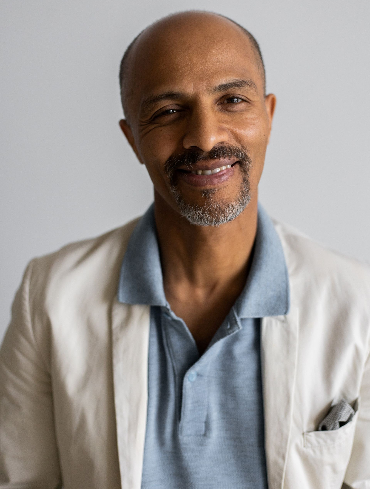

אודותינו
אדי כהן הוא מנהל ארגון טיפול רגשי בבני אדם באמצעות בעלי חיים בשם "NAYA". הוא מתמקד בשיפור הרמות הרוגע והרווחה של לקוחותיו באמצעות קשר חיובי עם בעלי החיים. אדי הביא רעיון חדשני בשימוש בחיות כמקור לשוברי דרך וטיפוח רגשי. הוא מציע סדנאות, טיפולים וסיוע לאנשים הנתקלים בקשיים רגשיים, כאמצעי עזרה מרגשת במסעם לשיפור הרמות השביעות והאושר. אדי כהן הפך לצמח רשאי ומרץ מוטיבציה גדול בעולם הטיפול הרגשי והריפוי באמצעות בעלי חיים.
טיפול רגשי בעזרת בעלי חיים הוא שיטה טיפולית מתקדמת שמשתמשת בקשר בין בני האדם ובבעלי החיים, כמו כלבים או סוסים, כדי לשפר את הרווחת הנפשית והרגשית של האדם. הטיפול מתבצע בעזרת תהליכים פסיכותרפיים מבוססי מחקר, והמטרה היא לסייע לאנשים להתמודד עם בעיות רגשיות ורעיוניות כמו חרדה, דיכאון או טראומה. הבעלי חיים משמשים כסימן חברתי ותמיכה עבור האדם, והם מספקים תחושה של בטחון ואהבה. במהלך הטיפול, המטפל יוצר קשר עם הבעלי חיים ומשתמש בתנועות, רגשות וחוויות עם החיות כדי לסייע ללקוח להבין ולנהל רגשות, לחזק את הבטחון העצמי ולשפר את היכולת לתקשר ולהתמודד עם אתגרים רגשיים. הטיפול הרגשי בעזרת בעלי חיים יכול להיות יעיל במיוחד לאנשים שסובלים מטראומה או בעיות נפשיות כמו נפילה, אובססיות או דיכאון. הקשר עם החיות יכול לסייע בהתמודדות עם רגשות חיוביים ושליליים ובבניית יכולות חברתיות ורגשיות.